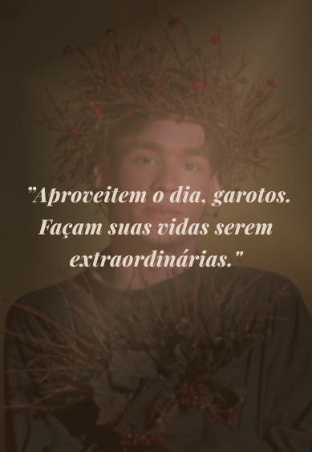

Últimas postagens

Carpe Diem e outras lições criativas Sociedade dos Poetas Mortos
15 de Out de 2026
Faça uma viagem ao passado comigo e relembre estas valiosas lições do memorável personagem, Sr. Keating...
➢
A atuação inesquecível de Robin Williams neste clássico dos anos 80: "Ele não seguia o roteiro"
16 de Out de 2026
Faça uma viagem ao passado comigo e relembre estas valiosas lições do memorável personagem, Sr. Keating...
➢
Lançado há mais de 30 anos, este filme marcou uma geração inteira: Agora, é Top 10 da Netflix porque continua inspirador
15 de Out de 2026
Faça uma viagem ao passado comigo e relembre estas valiosas lições do memorável personagem, Sr. Keating...
➢Personagens Princípais

Robin Willians

Ethan Hawke

Robert Sean

Josh Charles

Chale Dalton

Título Original: Dead Poets Society
Lançamento: 1989
Idioma Original: Inglês
Diretor: Peter Weir
Orçamento: US$ 16,4 milhões
Receita: US$ 235,9 milhões
Disponível em: Disney+
Palavras chaves:
Lançamento: 1989
Idioma Original: Inglês
Diretor: Peter Weir
Orçamento: US$ 16,4 milhões
Receita: US$ 235,9 milhões
Disponível em: Disney+
Palavras chaves:
Carpe Diem
Autonomia
Expressão artística
Anos 1950
Superação
Poesia